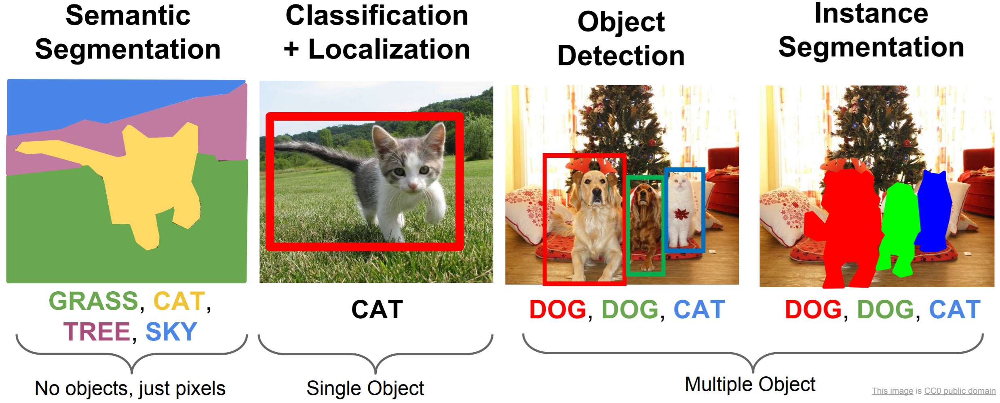
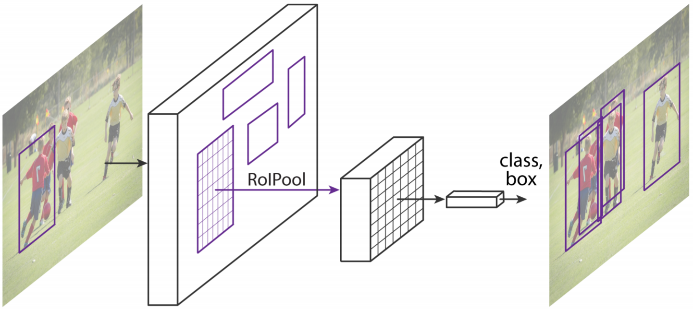
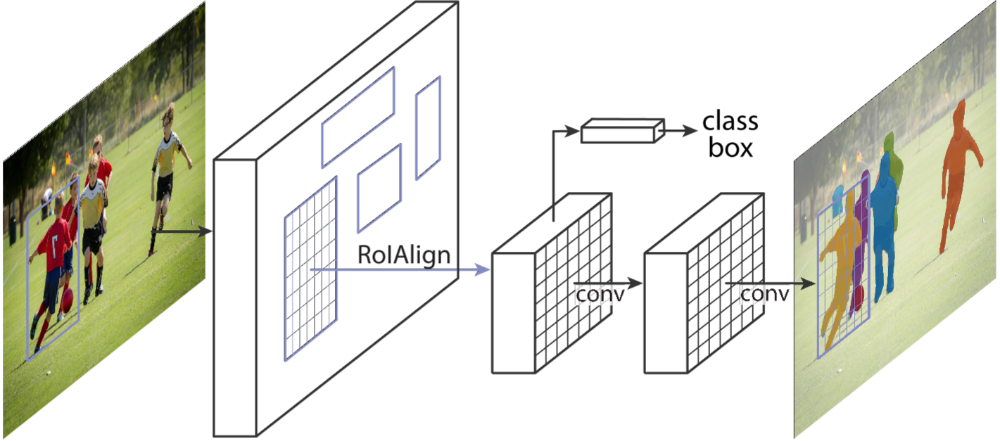
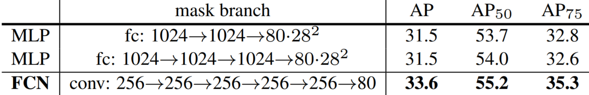
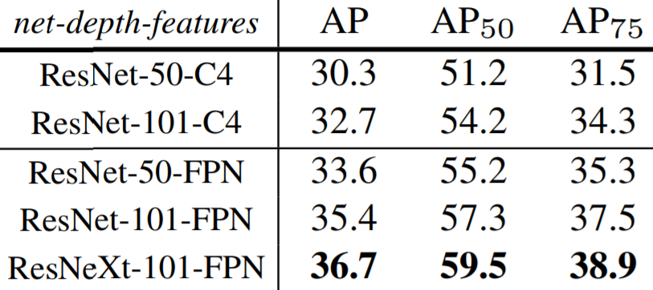
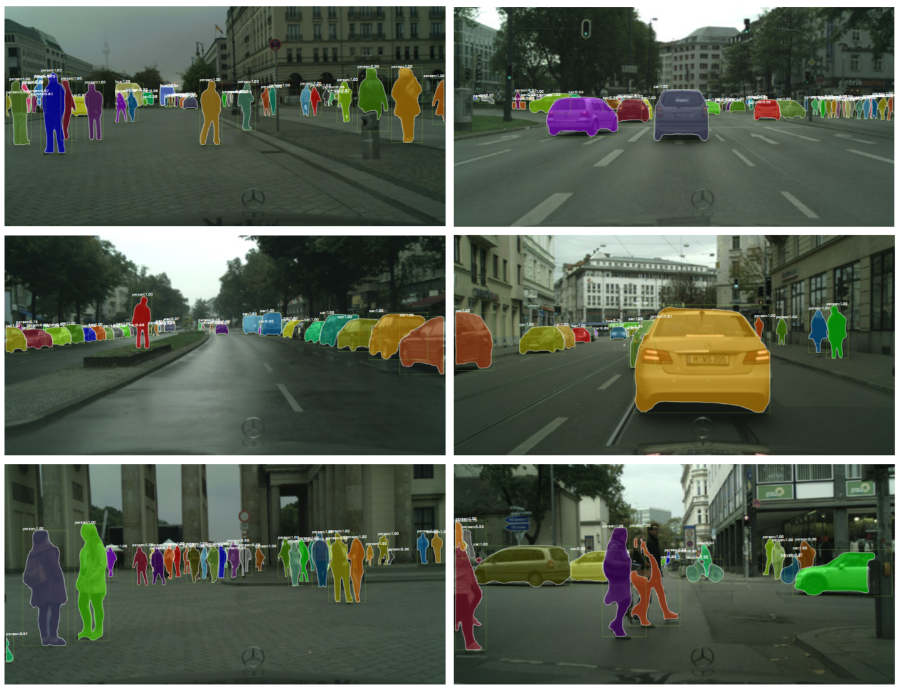

Instance Segmentation
Nikhil Sardana
December 2017
Introduction
Introduction
Instance Segmentation is one of the most difficult image-based computer vision tasks. It combines elements of semantic segmentation (pixel-level classification) and object detection (instance recognition). Essentially, at every pixel, we wish to classify not only the type of object (or background) the pixel is part of, but also determine which instance the pixel is part of.

Not unsurprisingly, instance segmentation networks rely heavily on existing object detection networks. This lecture will cover one particular instance segmentation network, called Mask R-CNN. Mask R-CNN modifies the Faster R-CNN architecture and adapts it for instance segmentation with minimal overhead. Mask R-CNN is the current leader in instance segmentation performance.
This lecture is designed for students with understanding of object detection networks. If you are unfamiliar with R-CNN, Fast R-CNN, or Faster R-CNN, read our lecture “Object Detection" before proceeding.
Mask R-CNN
Mask R-CNN is a modification of the Faster R-CNN architecture. The authors noticed that a previous “fully convolutional instance segmentation" (FCIS) solutions, which performed segmentation, classification, and bounding-box regression simultaneously, although they ran fast, exhibited low segmentation accuracy, especially on overlapping objects. Mask R-CNN therefore takes a different approach, decoupling segmentation from classification and bounding-box regression. Mask R-CNN thus adds a separate mask “head" to the Faster R-CNN network. This is shown in the diagram below.
The mask “head" is simply a small fully convolutional network that outputs an \(m\times m\) mask for each region proposal. We use a fully convolutional network rather than fully connected layers so we do not lose spatial information. A fully convolutional solution requires fewer parameters than previous fully connected solutions while simultaneously increasing accuracy.
The two diagrams at the bottom of Page 2 show a different visualization of Faster R-CNN and Mask R-CNN. Besides the additional “mask" head of Mask R-CNN, you may have noticed RoIAlign replacing RoI Pooling. We will cover this in the next section.



RoIAlign
If you are unfamiliar or have forgotten RoI Pooling, please refer back to Section 3.2 in our lecture “Object Detection". RoAlign is simply a more precise version of RoI Pooling.


Simply put, if an \(N\times N\) output is desired, the proposed region (black rectangle in the second image) is divided into an \(N\times N\) grid. Unlike RoI Pooling, these regions will contain the exact same number of pixels, so we will often have fractional pixels. From each grid cell, we sample four regions as shown by the red \(\times\) marks in the third image. We then subdivide each grid cell into four subcells, each centered on an \(\times\). We perform bilinear interpolation to get a single value for each subregion, or four values for each cell. These values are shown in the fourth image. Finally, we perform a simple max pooling on the bilinear interpolated values, taking the maximum value per cell to reach an \(N\times N\) output. This output is then passed through the fully connected layers for bounding-box regression and classification, and through the small Fully Convolutional Network (FCN) that makes up our masking head.
Of course, you should have one question remaining: What exactly is bilinear interpolation?
Bilinear Interpolation
Bilinear interpolation is fairly trivial. It is best understood visually. Simply put, the bilinearly interpolated value at the black spot is the sum of the values of each of the four colors multiplied by the areas of their respective rectangles, divided by the total area.


Note how in the figure on the left, the red pixel value corresponds to the smaller area opposite the pixel. This is because closer pixels (like the yellow one) have greater weighting. The figure on the right makes it clear how bilinear interpolation is implementaed in RoIAlign. At each blue dot (represented with a red \(\times\) in the figures on the previous page), we take the closest 4 pixel values and multiply them by the respective areas.
And that’s all RoIAlign is. It achieves the same goal as RoI Pooling, which is to take a region of any shape and create a fixed output. However, because we are using fractional pixels, we can get much better alignment. This simple change resulted in considerable accuracy improvements for Mask R-CNN.
Mask Head
Depending on the network backbone, the mask head differs for Mask R-CNN. Below is a look at the two different heads. Both are trivial FCNs.

In the diagram above, FPN standds for “Feature Pyramid Network". You should already be familiar with ResNet.
There are a few important things to know about this mask head. First, like we said earlier, our output is an \(m\times m\) mask. However, the authors found it beneficial to have binary masks. In other words, we predict \(K\) \(m\times m\) masks for each RoI, where \(K\) is the number of classes. One mask per class. Thus, the mask branch has a \(Km^2\)-dimensional output for each region of interest.
Our loss function is now different. Previously, we had \(L = L_{boundingbox} + L_{classification}\). We’ve covered the details of classification and bounding-box loss in our object detection, for both the region proposal network (RPN) and the network itself. For Mask R-CNN, we add another loss, \(L_{mask}\). For some region \(r\), if the ground truth class is \(k\), we apply a per-pixel sigmoid on only the \(k\)th mask. This allows us to define \(L_{mask}\) as the average binary cross-entropy loss. Thus, the masks for classes that don’t correspond to the ground truth aren’t calculated. (remember, we have one mask per class for every region).
By computing one mask per class, we are decoupling classification and segmentation. We simply don’t care what class the object is when we segment it. Previous practices, like FCNs for semantic segmentation, use multi-class cross-entropy losses and per-pixel softmax. These allows for competition between classes, which Mask R-CNN eliminates.
Training and Testing
When training, Mask R-CNN shares similarities with its object detection cousins. Hyperparameters were set to the same values. Positive RoIs have IoU of at least 0.5 with the ground truth box. In addition, \(L_{mask}\) is defined only on positive RoIs. The mask target is the intersection between an RoI and its associated ground-truth mask.
At test time, after non-maximum supression is applied, the masking branch is applied on only the top 100 RoIs. If an region was classified into class \(k\), we simply choose the \(k\)th mask. The mask is then resized to the size of the region of interest. By reducing segmentation computation to only 100 regions, we dramatically decrease the amount of overhead. In fact, Mask R-CNN runs at 5 fps, compared to Faster R-CNN’s 7 fps.
Model Performance
The Mask R-CNN paper not only provides evidence that their model outperforms all previous models, but also conducted various ablation experiments to show that RoIAlign, segmentation decoupling, and fully convolutional mask heads each individually improve accuracy. The results are shown in the tables below.



In addition, Mask R-CNN performs better with a deeper backbone CNN. However, it should be noted that the 5 fps speed was achieved using the shallow ResNet-50 network as a backbone.

The results on the COCO and Cityscapes benchmarks are shown below. Mask R-CNN performs with state-of-the-art accuracy on both.
COCO results.

Cityscapes results.
Some segmentation examples from the two benchmarks are provided below. Segmentation examples from COCO are the top eight images; examples from Cityscapes are the bottom six.


Mask R-CNN can also be sued for human pose estimation. We refer readers to the Mask R-CNN paper.
Conclusion
Mask R-CNN leaps ahead of the competition in terms of pure instance segmentation performance. However, no current instance segmentation method can achieve great results while operating in real-time (60 FPS). In the future, look for networks which dramatically improve segmentation speed as well as accuracy.